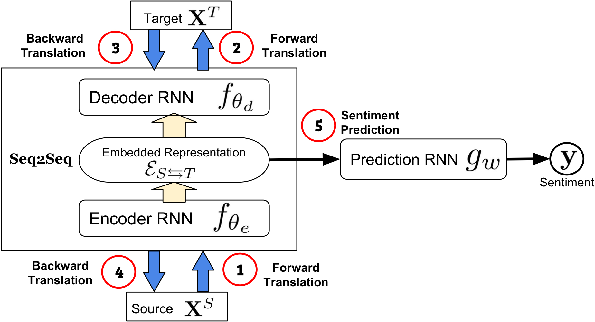
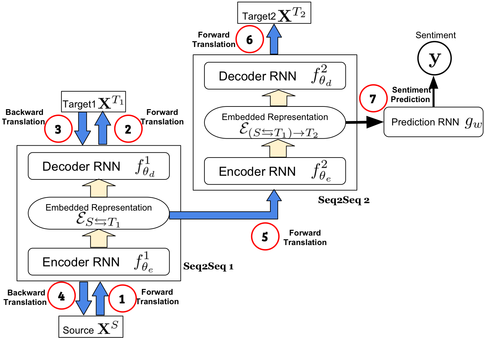

Found in Translation: Learning Robust Joint Representations by Cyclic Translations Between Modalities
Challenge/Opportunity
- For multimodal sentiment analysis, existing works require all modalities to learn a joint representation, which is sensitive to noisy or missing modalities during testing.
SOA Knowledge/Solution
- Earlier works include fusion approaches, multistage approach to learn hierarchical representations, attention and memory mechanism, and generative methods.
- To infer missing modalities, an approach is to model the probabilistic inter-modal relationships. This is achieved by sampling from the conditional distributions over each modality.
- Training with modalities dropped at random improves robustness of joint representations.
Approach (MCTN)
-
Dataset: CMU-MOSI, ICT-MMMO, and Youtube with the same speaker not appearing in both training and testing.
-
Feature extraction: GloVe word embeddings (language), Facet (visual), and COVAREP (acoustic), P2FA (alignment)
-
Multimodal cyclic translations:
-
Forward translations (source $\to$ target): given source modality $S$ and target $T$,
-
Compute joint embedding (Seq2Seq) \(\mathcal{E}_{S\to T}=f_{\theta_e}(\textbf{X}^S)\)
-
Transform into target modality (beam search approach) \(\textbf{X}^T=f_{\theta_d}(\mathcal{E}_{S\to T})\)
-
Loss: \(\mathcal{L}_t=\mathbb{E}[\ell_{\textbf{X}^T}(\hat{\textbf{X}}^T,\textbf{X}^T)]\)
-
-
Backward translations (predicted target $\to$ source):
-
Compute joint embedding \(\mathcal{E}_{T \to S}=f_{\theta_e}(\hat{\textbf{X}}^T)\)
-
Transform into target modality \(\hat{\textbf{X}}^S=f_{\theta_d}(\mathcal{E}_{T\to S})\)
-
Loss: \(\mathcal{L}_c=\mathbb{E}[\ell_{\textbf{X}^S}(\hat{\textbf{X}}^S,\textbf{X}^S)]\)
-
-
Prediction:
- Loss: \(\mathcal{L}_p=\mathbb{E}[\ell_{\textbf{y}}(\hat{\textbf{y}},\textbf{y})]\)
-
Coupled translation-prediction objective function: $\mathcal{L}=\lambda_t\mathcal{L}_t+\lambda_c\mathcal{L}_c+\mathcal{L}_p$

-
-
Hierarchical MCTN performs two levels of modality translations and doesn’t use a cyclic translation loss except the first level of translation since the ground truth embedding is unknown.

Results
- MCTN chieves new SOA results on the tested datasets.
- MCTN only uses source modality for prediction and thus ensures robustness to noisy/missing modalities.
- Adding more modalities improves learning more discriminative joint representations.
- Cyclic translations add regularization while ensuring the representation retain maximal information from all modalities.
- Language is the most discriminative modality in the joint representation.
- Representation learning is easier when task is broken down recursively.
Thoughts
- Other than selecting the most significant features in learning, another aspect of model robustness is to handle imperfect training/testing datasets.